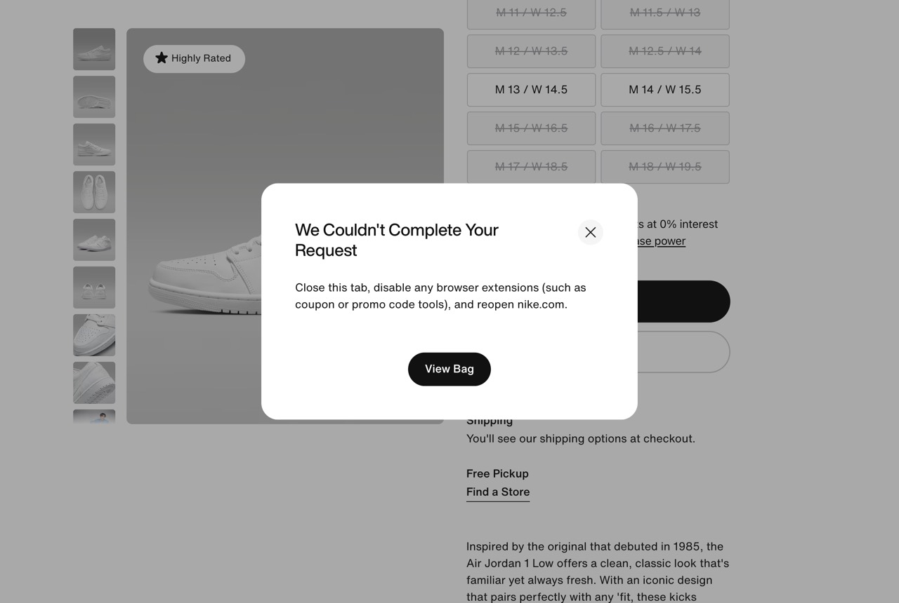
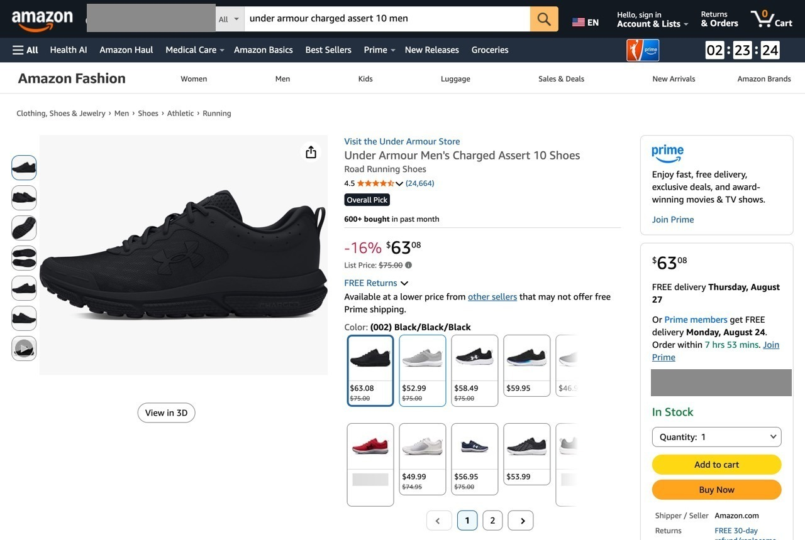
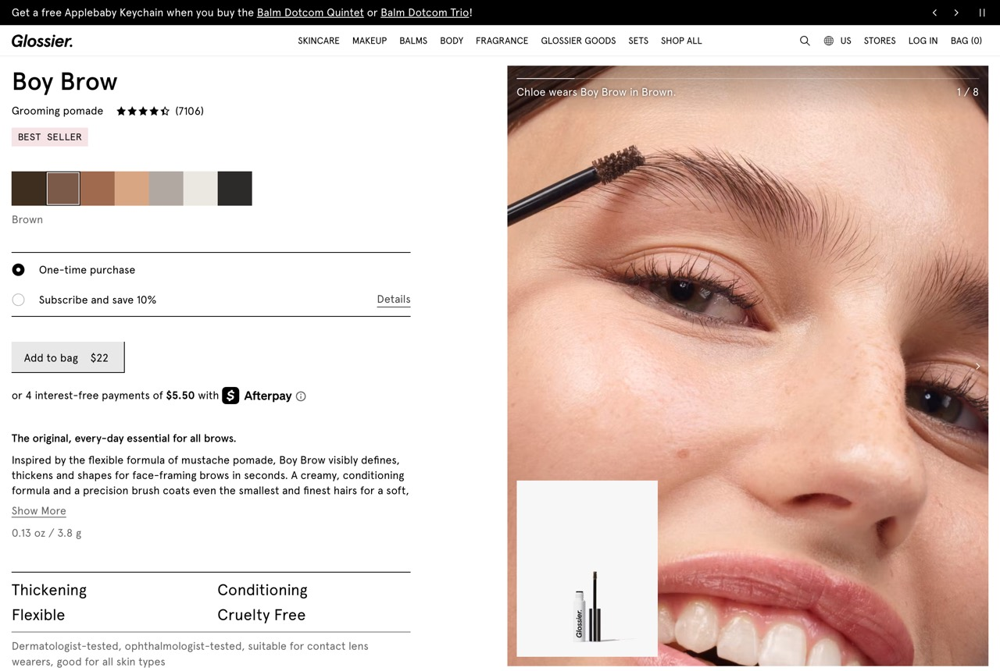
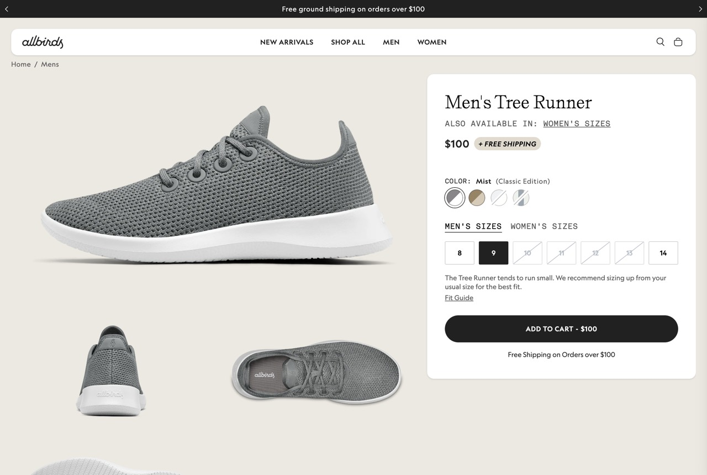
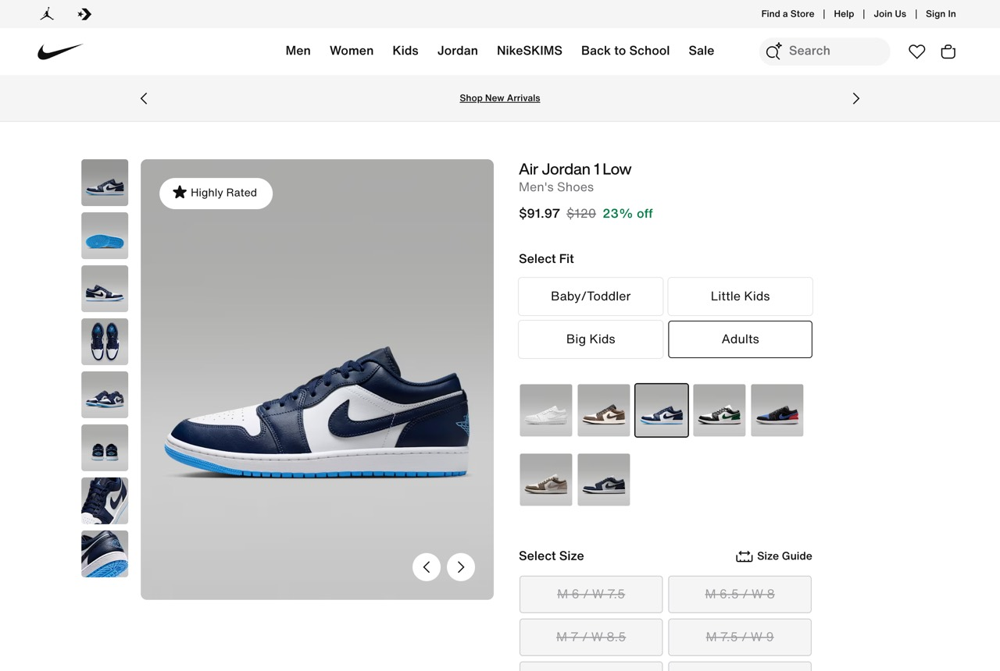
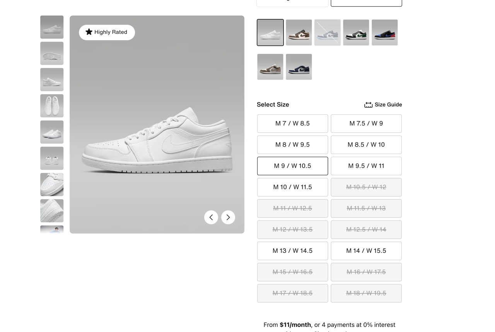
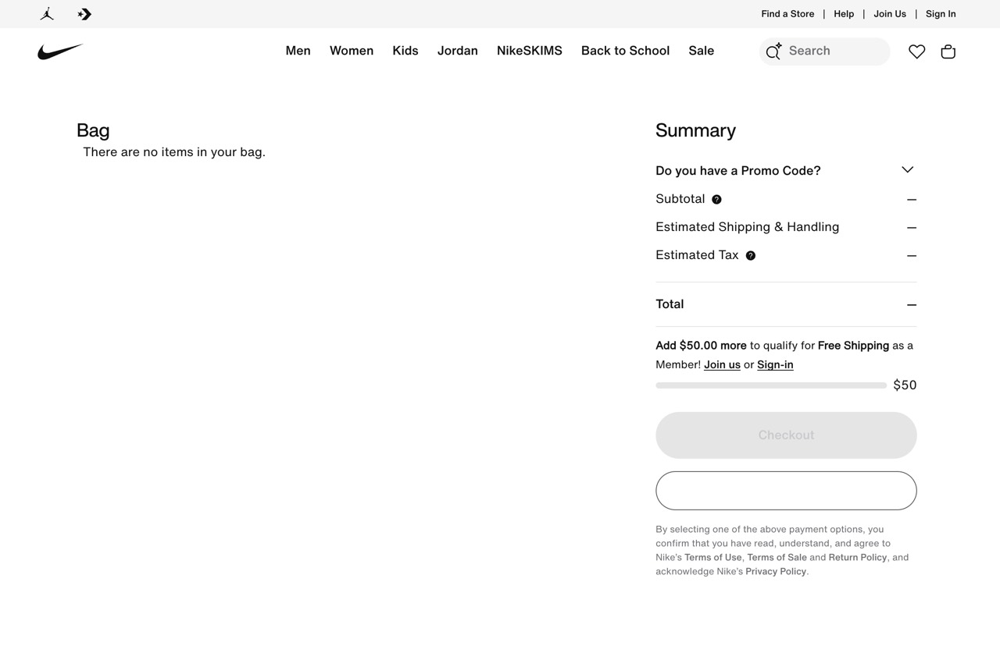

The refusal was right: an automated session was present. The reason was not. It came back identical on a clean session, and again on 1 September on a stock automated session with no automation-hiding flag, from a page that scores near the top of any readability check you care to run. I sent one AI agent to buy one item at each of six stores and logged every step. This was the strangest thing it was told. It was not the only one.
Read this if you run a store, you build agents, or you are deciding whether to let one spend your money.
| Store | Readability | What happened |
|---|---|---|
| Glossier | 95 | Pass in 3 actions |
| Nike | 98 | Blocked at Add to Bag |
| Zara | 100 | Pass in 5 actions |
| SSENSE | no page | Blocked at page load |
| Allbirds | 95 | Pass in 3 actions (after a redirect) |
| Amazon | 37 | Pass in 9 actions, 2 dead ends, 1 harness restart |
Readability did not predict whether the agent could buy. A page scoring 90 out of 100 was refused; one scoring 0 completed the task. Before this, I was about to build a readability checker: four checks, structured data, headings, control names, alt text. Zero of the four touched anything that actually blocked or steered the agent. What did: whether the store allowed the session, and what the page had already selected before the agent chose. n=6, add-to-cart not purchase, one model, one harness. Every trace is in the full record.
Four of six passed. Here is the step in each that a less careful agent, or the same agent with a vaguer instruction, would have skipped, and what the page would have done about it: nothing.

The search result linked to the 10.5 child listing, so the size arrived pre-set, in a select with no accessible name. Skip the picker and whatever size the ranking chose ships.
text "Size:" [e168] combobox (unnamed) expanded=false value="10.5"

Shopify opens on the first available variant, Dark Brown. After choosing Brown, two shades both report checked. Trust the state and Dark Brown ships.
[e22] radio "Dark Brown variant option" checked=true [e25] radio "Brown variant option" checked=true

Size 9 clicked. The button never says so; the only evidence is the add-to-cart label changing.
[e30] button "Select size 9" [e37] button "ADD TO CART - $100"
The page lets a machine act on an assumption. Amazon's search result sent the agent to the 10.5 listing, where the size sat pre-set in a control with no name; that is how parent and child listings work, and it is exactly why the agent inherits a choice the ranking made. Glossier opened on Shopify's default shade, and after I picked Brown the tree said both were checked. Allbirds' size button never says it is selected; the only clue is the add-to-cart label changing. Zara adds to cart the instant you tap a size. None of these is an accessibility failure in the compliance sense. Each is a place where an agent buying on your behalf proceeds on a guess, and the receipt is the first time anyone finds out.
Today the answer to the title question is: you do. You pay the return, the merchant pays the logistics, and the agent vendor pays in trust. Nobody has written down whose fault it was.
The other two did not fail on the page. They were refused. Nike, Air Jordan 1 Low, men's size 9: the agent read the page, found the first colorway sold out in its size, switched colorway, selected M 9, and clicked Add to Bag. This is what came back.

First colorway. Price absent from the tree, only "23% off". Every adult size disabled except M 12.
text "23% off" [e61] radio "M 9 / W 10.5" disabled

Switched colorway. M 9 in stock, selected.
[e60] radio "M 9 / W 10.5" checked=true [e75] button "Add to Bag"
Clicked Add to Bag. The whole tree collapses to this.
heading "We Couldn't Complete Your Request" h1 text "Close this tab, disable any browser extensions (such as coupon or promo code tools), and reopen nike.com."

Checked the bag anyway.
text "There are no items in your bag."
The refusal was right. The reason was not. Nike was correct to stop an automated session. The modal named a cause that did not exist (browser extensions; there were none) and not the one that did (automation). That copy is written for the common case, a human with a coupon plugin, and an agent relaying it will tell its user the same false thing. SSENSE's gate offered a checkbox the agent cannot see. Amazon's first page said "something went wrong". None of them said "automated sessions are not allowed here", or pointed at the lane where they are. Nike's page scores at the top of every readability check here. It did not matter.
This is the part nobody building "agent-readiness" scores is measuring: not whether the page can be read, but whether the transaction will be honored, and what the person is told when it is not. Identified-agent lanes exist (Cloudflare's Web Bot Auth, Shopify's UCP). This run did not use one. The finding is what an unidentified agent gets: a generic wall with no pointer to the lane.
A preselected shade, a size button that never says it is selected, a refusal that names a cause that was not there: none of these is a broken line of code. Each is a choice a store made about what to hand a user before they choose, and what to tell them when it says no. When the user is an agent, the choice is inherited and the message is relayed. Three of those choices, with the tree line that proves each, and who is left holding it.
A variant is already selected on arrival, by a search ranking or a platform default, and the page accepts it without a choice ever being made.
[e168] combobox (unnamed) expanded=false value="10.5"
Amazon: the search result linked to the 10.5 listing, so the size sat pre-set in a select with no name. Glossier: Shopify opened on the first available shade.
Who paysThe person, on delivery day, and again at the returns desk. The merchant pays the logistics. The agent vendor pays the trust.
Reading and operating succeed; the cart call is rejected, and the stated reason is not the real one.
text "Close this tab, disable any browser extensions (such as coupon or promo code tools), and reopen nike.com."
Nike. The refusal was correct; the stated cause (extensions) did not exist in the session and the real one (automation) was not named. Bag stayed at zero.
Who paysThe merchant loses the sale. The person is told to fix something that is not broken, and believes it.
The session is refused before a product is shown, and the control that would let it through is not in the tree.
heading "Performing security verification" h2
SSENSE on every load. Amazon once, then not. The Turnstile checkbox sits in a cross-origin iframe the agent cannot see, and the wall does not mention the identified-agent lane that would let it through.
Who paysNobody notices. The agent says "could not load", the person assumes the store is down, the merchant never knows.
Why now. Humans arriving at US retail sites from AI assistants grew 393% year over year in Q1 2026 and convert 42% better than other traffic, per Adobe. That is people clicking through, not agents buying. Agents that act, not just refer, are the next step, and nobody is measuring what happens to them at the cart. Two of the six brands here already publish agent instructions and a commerce-protocol endpoint without having built either: Shopify ships them. Glossier's file tells agents to prefer that path "over screen-scraping or scripting the storefront directly." The feed layer is arriving; the page layer is where the wrong shoe still gets bought.
This is a starting list, not a standard. Four lines a merchant can check in an afternoon, and four lines an agent vendor could demand before letting a model spend someone's money.
Pattern 01: the refusal, redesigned, before and after Full record: six traces, every snapshot, raw dataAgent: Claude Fable 5 via Claude Code, one logged action per step, reading the Chromium accessibility tree. Headed Chromium with a stock Chrome user agent, not identified as an agent, launched with the AutomationControlled flag disabled (a common Playwright setting that hides the webdriver signal; disclosed because it matters). Nike and SSENSE were re-run without it on a stock session: same refusal, same wall; both re-run traces are in the full record. No proxies, no CAPTCHA solving, read-only past the cart, one run per brand, dead ends kept. Tree-only findings are a lower bound for tool-driving agents; vision agents can see selection state the tree omits. All six runs on 22 August 2026. Full method, limits and corrections log in the full record.
{kind=link}
{kind=link}
{kind=link}
{kind=link}
{kind=link}
{kind=link}
{kind=link}